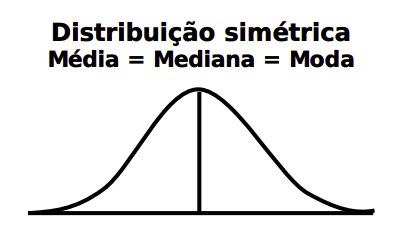
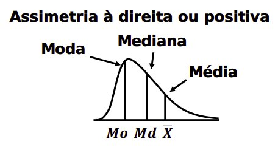
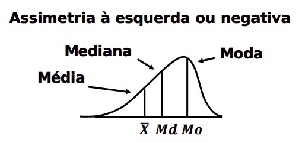
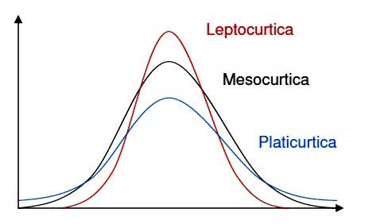

Estatística
Capítulos
1 aula
Alguns códigos estão disponíveis neste notebook.
Introdução
- Estatística, processamento (organização, análise e interpretação) de dados para gerar (apresentar) informações para decisões assertivas.

Figure 1: Passos da estatística
- Estatística descritiva, descrição (tabelas, gráficos, medidas), características amostrais e indutiva, inferências a partir de amostras de uma população, características populacionais.
- População,totalidade de um conjunto de dados, amostra, pequena parte da população.

Figure 2: População e amostra
- Fases do método estatístico: definição do problema, delimitação do problema, planejamento, coleta de dados, apuração de dados, apresentação de dados, análise de dados, interpretação de dados.
Variáveis
- Qualitativas (qualidades ou atributos, nominais ou ordinais [ordem]) e quantitativas (quantidade, discretas [contagens], contínuas [medidas]).
Figure 3: Variáveis
Distribuição e frequência
- Rol, ordenação dos dados iniciais.
- Frequência, contagem do número de ocorrências de um dado (frequência absoluta (f), número de repetições).
- Distribuição de frequência, tabela com a frequência das ocorrências.
Frequência acumulada (fa), soma das frequências (valor final da frequência acumulada sempre igual a quantidade dos dados) e frequência relativa (fr), divisão da frequência absoluta (fa) pelo número de elementos (N) da amostra, em percentual.
\[f_r = \frac{f}{N}\]
- Distribuição de frequência por classe, frequência por intervalo de valores, denominados classe.
- Classe (faixa de valor) com limites inferiores (Li), valores fechados à esquerda e superiores, valores aberto a direita (Ls).
Amplitude total (A) igual ao limite superior (Ls) menos o limite inferior (Li), a mesma para toda a classe.
\[\text{A} = \text{Ls} - \text{Li}\]
O número de classes pode ser definido pelas fórmulas:
\[\text{Número de classes} = \sqrt{\text{amostra}}\] \[i = 1 + 3,3 \times \log n\]
sendo n o número total de observações.
Amplitude das classes
\[A = \frac{\text{Amplitude Total}}{\text{Número de classe}}\]
Ponto médio (Pm), valor do meio do intervalo, igual ao limite superior mais o limite inferior dividido por dois, variável para cada classe.
\[P_m = \frac{L_s + L_i}{2}\]
- Passos para organização de distribuição de frequência por classes:
- a) Fazer rol dos dados;
- b) calcular amplitude total
c) determinar número de classes (raiz da amostra ou método de Sturges;
\[\sqrt{Amostra}\] \[i = 1 + 3,3 \cdot \log n\]
d) determinar a amplitude das classe (amplitude total dividido pelo número de classes);
\[A = \frac{\text{Amplitude Total}}{\text{Número de classe}}\]
- e) montar tabela.
- Recomenda-se o número mínimo de 5 e o máximo de 20 intervalos para construção da tabela.
Séries e gráficos
- Séries temporais, geográficas, categóricas ou específicas, mistas.
- Gráficos de linhas (tempo), barras (tempo), pizza (setor, percentual), coluna (comparações), histograma (distribuição de frequência por classe)…
2 aula
Medidas de posição
- Medidas de posição (tendência central), média, mediana e moda.
- Tipos de dados: não agrupados, distribuição de frequência, distribuição de frequência por classes.
Média, para dados não agrupados, grau de concentração numa distribuição, quociente entre a soma de todos os valores da variável e seu número de elementos. Fórmula: X barra igual ao somatório de X sobre N.
\[\bar{X} = \frac{\sum X}{N}\]
- Média ponderada (distribuição de frequência), quociente entre a soma de todos os valores da variável multiplicados por suas frequências (pesos) e seu número de elementos. Fórmula: X barra igual ao somatório da multiplicação de X por sua respectiva frequência (f) sobre N.
Para distribuição de frequência simples
\[\bar{X} = \frac{\sum (X.f)}{N}\] sendo \[N = \sum f\]
Para distribuição de frequência por classe
\[\bar{x} = \frac{\sum{(PM.f)}}{N}\]
- Mediana (dados em ordem, rol), valor que divide a série em dois conjuntos de igual tamanho. Se o número de dados for ímpar, a mediana está no centro, se for par, a mediana é a média aritmética dos dois valores no centro da série.
Para dados não agrupados com quantidade ímpar (valor central):
\[posição = \frac{N}{2}\]
Para dados não agrupados com quantidade par (média dos dois valores centrais):
\[posição = \frac{N + N}{2}\]
Para distribuições de frequência por classe:
\[Md = Li + \frac{(N/2 - \sum f_{ant})}{f_{Md}}.A\]
Moda, valor de maior frequência
Para dados não agrupados e distribuição de frequência, observação direta.
Para distribuição de frequência por classe:
\[Mo = Li + \frac{f_{post} \cdot A}{f_{ant} + f_{post}}\]
- Tipos:
- Distribuição modal, apenas um valor.
- Distribuição bimodal, dois ou mais valores,
- Distribuição amodal, sem moda.
3 aula
Medidas de dispersão
- Medidas de dispersão, medidas para verificar o quanto os valores estão afastados em relação a média; relação com especificações.
- Amplitude total, diferença entre o maior e o menor valor da série. Quanto maior a amplitude, maior a dispersão.
Desvio médio, a média das distâncias entre cada elemento da amosta e seu valor médio.
\[Dm = \frac{\sum|x - \bar{x}|.f}{N}\]
- Variância, média dos quadrados dos desvios, proporcionais as dispersões.
Fórmula para população
\[S^2 = \frac{\sum (x-\bar{x})^2 .f}{N}\]
Fórmula para amostra
\[S^2 = \frac{\sum (x-\bar{x})^2 .f}{N-1}\]
Depois, extrair a raiz:
\[S = \sqrt{S^2}\]
- Assimetria, grau de afastamento de uma distribuição da unidade de simetria, grau de deformação da curva de frequências.
- Tipos:
Simétrica, igualdade dos valores de média, mediana e moda:
\[\overline{X} = Md = Mo\]

Figure 4: Simétrica
Assimétrica positiva (a direita), média maior que mediana e moda:
\[\overline{X} > Md > Mo\]

Figure 5: Assimétrica positiva
Assimétrica negativa (a esquerda) média menor que mediana e moda:
\[\overline{X} < Md < Mo\]

Figure 6: Assimétrica negativa
Primeiro coeficiente de Pearson:
\[A_s = \frac{\overline{X} - Mo}{S}\]
Segundo coeficiente de Pearson:
\[A_s = \frac{3.(\overline{X} - Md)}{S}\]
Curtose, grau de achatamento do gráfico de uma distribuição de frequências em relação a curva padrão (curva normal).
\[K = \frac{Q_3 - Q_1}{2(P_{90} - P_{10})}\]
- Leptocúrtica, dados concentrados em relação a média.
- Mesocúrtica, dados uniformemente distribuídos.
- Platicúrtica, dados dispersos em relação a média.

Figure 7: Medidas de curtose
Fórmula para cálculo do quartil
\[Qi = Li + \frac{(\frac{N}{4}i - \sum f_{ant})}{f_{Di}}.A\]
Fórmula para cálculo do percentil
\[Pi = Li + \frac{(\frac{N}{100}.i - \sum f_{ant})}{f_{pi}}.A\]
4 aula
Probabilidade
- Probabilidade, possibilidade (medida de grau de incerteza) de ocorrência de um determinado evento definido num espaço amostral relacionado a um evento aleatório.
- Experimento aleatório (E), imprevisíveis.
- Espaço amostral (S), conjunto de todos os resultados possíveis do evento estatístico.
- Cálculo da probabilidade, número de elementos do evento A sobre o número de elementos do espaço amostral S, P(A)=A/S; A sempre menor ou igual a S.
- Eventos exclusivos, quando a ocorrência de um exclui a realização do outro, igual a soma das probabilidades individuais, P(A) + P(B), ou P(A U B).
- Eventos não exclusivo, eventos simultâneos, igual a soma das probabilidades individuais menos a multiplicação das mesmas, P(A) + P(B) - P(A) x P(B), ou P(A U B) = (A) + P(B) - P(A interseção B).
- Condicional, evento A ocorre depois de evento B, número de elementos da interseção de A e B sobre número de elementos de B, P(A/B) = P(A interseção B) sobre P(B).
- Regra da multiplicação, ocorrência conjunta de dois eventos:
- Ocorrência simultânea, P(A interseção B) = P(B) x P(A / B), com ou sem reposição.
5 aula
Distribuições
- Distribuição de probabilidade, expressão matemática aplicável a múltiplas situações, respeitando determinadas premissas.
- Variáveis aleatórias, valores acidentais, discretas ou contínuas.
- Variável aleatória discreta, valores inteiros e finitos.
- Variável aleatória contínua, valores em um intervalo.
- Distribuição binomial, discreta, a cada tentativa, sempre dois resultados possíveis e exclusivos, sucesso (p) e insucesso (q), probabilidade de um evento ocorrer 'x' vezes em 'n' tentativas.
- Dados da fórmula: (N), tentativas, (X), vezes, (p), probabilidade de sucesso, (q = 1 - p), insucesso e fatoriais de N e X, este sempre igual ou menor a N.
- Distribuição Poisson, sucessos por unidade de tempo ou espaço.
- Dados da fórmula: (X), número de sucessos, (sinal de lambda), número médio de sucesso em intervalo específico, média e (e), base do logaritmo natural (2.71828).
6 aula
Estimação
- Inferência estatística, processo para obter informações sobre uma população com base em resultados obtidos na amostra.
- Estimativa, valor atribuído ao estimador, grandeza baseada em observações feitas em amostra, pode ser por ponto ou intervalo.
- Estimativa por ponto, valor único, aproximação.
- Estimativa por intervalo, intervalo de confiança, faixa de valores possíveis e aceitos como verdadeiro em torno da estimativa por ponto.
- Intervalo de confiança, intervalo de valores com probabilidade de conter o valor desconhecido associado a um nível de confiança, um número que exprime o grau de confiança deste intervalo.
- Fórmula:
- C (erro amostral) igual a Z (distribuição normal padronizada) vezes delta (desvio padrão da população) sobre a raiz quadrada de n (tamanho amostral).
- O intervalo de confiança (letra grega mu, média da população) fica entre a média amostral menos o C e a média amostral mais C.
- Erro versus tamanho da amostra, inversamente proporcional, variação da fórmula de intervalo de confiança.
Intervalo de confiança para proporções
- Teste de hipótese, comparar medidas, aferir correção, fazer inferências, hipótese nula (H zero), igualdade, alternativa (H um), desigualdade.
- Erros, hipótese nula ser verdeira (tipo 1) e rejeitada ou ser falsa e aceita (tipo 2).
- Regiões, rejeição e aceitação.
- Estimador
Fórmula…